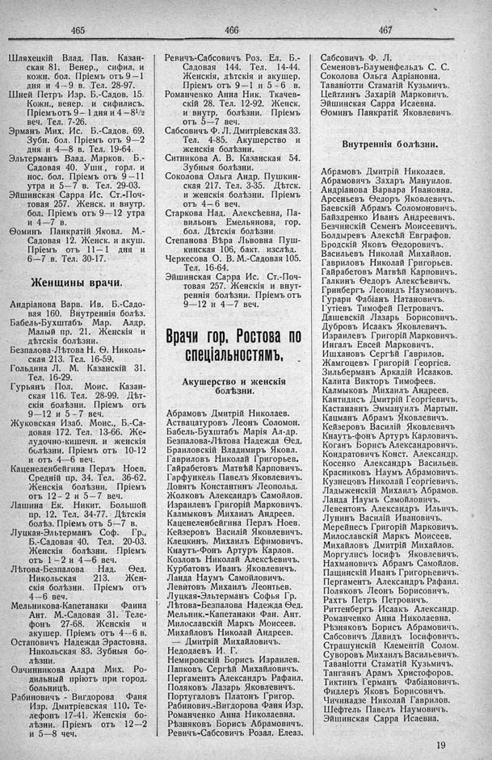

Лист источника 287
Скан

Распознанный текст
465
Шляхецкій Влад. Пав. Казан-
ская 81. Венер., сифил. и
кожн. бол. Пріемъ отъ 9—1
дня и 4--9 в. Тел. 28-97.
Шней Петръ Изр. Б.-Садов. 15.
Кожн., венер. и сифилисъ.
Пріемъ отъ 9-- 1 дня и 4—8¹/2
веч. Тел. 7-26.
Эрманъ Мих. Ис. Б.-Садов. 69.
Зубн. бол. Пріемъ отъ 9—2
дня и 4—8 в. Тел. 19-64.
Эльтерманъ Влад. Марков. Б.-
Садовая 40. Ушн., горл. и
нос. бол. Пріемъ отъ 9—11
утра и 5—7 в. Тел. 29-03.
Эйшинская Сарра Ис. Ст.-Поч-
товая 257. Женск. и внутр.
бол. Пріемъ отъ 9—12 утра
и 4—7 в.
Ѳоминъ Панкратій Яковл. М.-
Садовая 12. Женск. и акуш.
Пріемъ отъ 11—1 дня и
6—7 в. Тел. 30-17.
Женщины врачи.
Андріанова Варв. Ив. Б.-Садо-
вая 160. Внутреннія болѣз.
Бабель-Бухштабъ Мар. Алдр.
Малый пр. 21. Женскія и
дѣтскія болѣзни.
Безпалова-Лѣтова Н. Ѳ. Николь-
ская 213. Тел. 16-59.
Гольдина Л. М. Казанскій 31.
Тел. 16-29.
Гурьянъ Пол. Моис. Казан-
ская 116. Тел. 28-99. Дѣт-
скія болѣзни. Пріемъ отъ
9—12 и 5—7 веч.
Жуковская Изаб. Моис., Б.-Са-
довая 172. Тел. 13-66. Же-
лудочно-кишечн. и женскія
болѣзни. Пріемъ отъ 10-12
и отъ 4—6 веч.
Каценеленбейгина Перлъ Ноев.
Средній пр. 34. Тел. 36-62.
Женскія болѣзни. Пріемъ
отъ 12- 2 и 5-7 веч.
Лашина Ек. Никит. Большой
пр. 12. Тел. 34-77. Дѣтскія
болѣз. Пріемъ отъ 5—7 в.
Луцкая-Эльтерманъ Соф. Гр.,
Б.-Садовая 40. Тел. 20-03.
Женскія болѣзни. Пріемъ
отъ 1—2 и 4—6 веч.
Лѣтова-Безпалова Над. Ѳед.
Никольская 213. Жен-
скія болѣзни. Пріемъ отъ
4--6 веч.
Мельникова-Капетанаки Фаина
Ант. М.-Садовая 31. Теле-
фонъ 27-68. Женскія и
акушер. Пріемъ отъ 4--6 в.
Остаповичъ Надежда Эрастовна.
Никольская 83. Зубныя бо-
лѣзни.
Овчинникова Алдра Мих. Ро-
дильный пріютъ при город.
больницѣ.
Рабиновичъ - Вигдорова Фаня
Изр. Дмитріевская 110. Те-
лефонъ 17-41. Женскія бо-
лѣзни. Пріемъ отъ 12—2
и 5—8 веч.
466
Ревичъ-Сабсовичъ Роз. Ел. Б.-
Садовая 144. Тел. 14-44.
Женскія, дѣтскія и акушер.
Пріемъ отъ 9—1 и 5 - 6 в.
Романченко Анна Ник. Ткачев-
скій 28. Тел. 12-92. Женск.
и внутр. болѣзни. Пріемъ
отъ 5—7 веч.
Сабсовичъ Ф. Л. Дмитріевская 33.
Тел. 4-85. Акушерство и
женскія болѣзни.
Ситникова А. В. Казанская 54.
Зубныя болѣзни.
Соколова Ольга Андр. Пушкин-
ская 217. Тел. 3-35. Дѣтск.
и женскія болѣзни. Пріемъ
отъ 4—6 веч.
Старкова Над. Алексѣевна, Па-
вильонъ Емельянова, гор.
бол. Дѣтскія болѣзни.
Степанова Вѣра Львовна Пуш-
кинская 106, бакт. изслѣд.
Черкесова О. В. М.-Садовая 105.
Тел. 16-64.
Эйшинская Сарра Ис. Ст.-Поч-
товая 257. Женскія и внут-
реннія болѣзни. Пріемъ отъ
9—12 и 4—7 веч.
Врачи гор. Ростова по
спеціальностямъ.
Акушерство и женскія
болѣзни.
Абрамовъ Дмитрій Николаев.
Аствацатуровъ Леонъ Соломон.
Бабель-Бухштабъ Марія Ал-др.
Безпалова-Лѣтова Надежда Ѳед.
Браиловскій Владимиръ Яковл.
Гавриловъ Николай Григорьев.
Гайрабетовъ Матвѣй Карповичъ.
Гарфункель Павелъ Яковлевичъ.
Довятъ Константинъ Леопольд.
Жолковъ Александръ Самойлов.
Израилевъ Григорій Марковичъ.
Калмыковъ Михаилъ Андреев.
Каценеленбейгина Перлъ Ноев.
Кейзеровъ Василій Яковлевичъ.
Клецкинъ, Михаилъ Ефимовичъ.
Кнаутъ-Фонъ Артуръ Карлов.
Козловъ Николай Алексѣевичъ.
Курбатовъ Иванъ Яковлевичъ.
Ланда Наумъ Самойловичъ.
Левитовъ Михаилъ Леонтьев.
Луцкая-Эльтерманъ Софья Гр.
Лѣтова-Безпалова Надежда Ѳед.
Мельник.-Капетанаки Фан. Ант.
Милославскій Маркъ Моисеев.
Михайловъ Николай Андреев.
— Дмитрій Михайловичъ.
Недодаевъ И. Г.
Немировскій Борисъ Израилев.
Папковъ Сергѣй Михайловичъ.
Пергаментъ Александръ Рафаил.
Поляковъ Лазарь Яковлевичъ.
Португаловъ Платонъ Григор.
Рабинович.-Вигдорова Фаня Изр.
Романченко Анна Николаевна.
Рѣзняковъ Борисъ Абрамовичъ.
Ревичъ-Сабсовичъ Розал. Елеаз.
467
Сабсовичъ Ф. Л.
Семеновъ-Блуменфельдъ С. С.
Соколова Ольга Адріановна.
Таваніотти Стаматій Кузьмичъ.
Цейтлинъ Захарій Марковичъ.
Эйшинская Сарра Исаевна.
Ѳоминъ Панкратій Яковлевичъ.
Внутреннія болѣзни.
Абрамовъ Дмитрій Николаев.
Абрамовичъ Захаръ Мануилов.
Андріанова Варвара Ивановна.
Арсеньевъ Ѳедоръ Яковлевичъ.
Баевскій Абрамъ Соломоновичъ.
Байздренко Иванъ Андреевичъ.
Безчинскій Семенъ Моисеевичъ.
Болдыревъ Алексѣй Евграфов.
Бродскій Яковъ Ѳедоровичъ.
Васильевъ Николай Михайлов.
Гавриловъ Николай Григорьев.
Гайрабетовъ Матвѣй Карповичъ.
Галкинъ Ѳедоръ Алексѣевичъ.
Гринбергъ Леонидъ Наумовичъ.
Гурари Фабіанъ Натановичъ.
Гутіевъ Тимофей Петровичъ.
Дашевскій Лазарь Борисовичъ.
Дубровъ Исаакъ Яковлевичъ.
Израилевъ Григорій Марковичъ.
Ингалъ Евсей Марковичъ.
Ишхановъ Сергѣй Гаврилов.
Жамгоцевъ Григорій Георгіев.
Зильберманъ Аркадій Исааков.
Калита Викторъ Тимофеев.
Калмыковъ Михаилъ Андреев.
Кантидисъ Дмитрій Георгіевичъ.
Кастаяанъ Эммануилъ Мартын.
Кацманъ Абрамъ Яковлевичъ.
Кейзеровъ Василій Яковлевичъ
Кнаутъ-фонъ Артуръ Карловичъ.
Коганъ Борисъ Александровичъ.
Кондратовичъ Конст. Александр.
Косенко Александръ Васильев.
Красниковъ Наумъ Абрамовичъ.
Кузнецовъ Николай Георгіевичъ.
Ладыженскій Михаилъ Абрамов.
Ланда Наумъ Самойловичъ.
Левентонъ Александръ Ильичъ.
Лунинъ Василій Ивановичъ.
Мерейнесъ Григорій Марковичъ.
Милославскій Маркъ Моисеев.
Михайловъ Дмитрій Михайлов.
Моргулисъ Іосифъ Яковлевичъ.
Нахмановичъ Абрамъ Самойлов.
Пащинскій Иванъ Григорьевичъ.
Пергаментъ Александръ Рафаил.
Поляковъ Леонъ Борисовичъ.
Рахтъ Петръ Петровичъ.
Риттенбергъ Исаакъ Александр.
Романченко Анна Николаевна.
Рѣзняковъ Борисъ Абрамовичъ.
Сабсовичъ Давидъ Іосифовичъ.
Страшунскій Клементій Солом.
Суворовъ Михаилъ Васильевичъ.
Таваніотти Стаматій Кузьмичъ.
Тангаянъ Арамъ Христофоров.
Тиктинъ Германъ Фабіановичъ.
Фидлеръ Яковъ Борисовичъ.
Чичинадзе Николай Гаврилов.
Шефтель Павелъ Наумовичъ.
Эйшинская Сарра Исаевна.
19